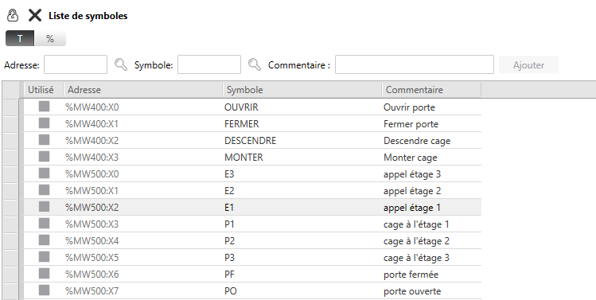
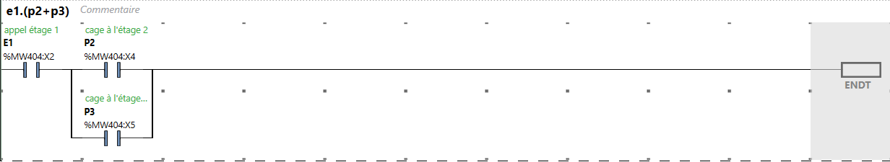

Programmable Logic Controller
Preamble
- The simulator integrates a physical or virtual PLC into a folio.
- Communication with the PLC is carried out using the [Modbus/Tcp-IP] protocol (modbus.md) :
- with the local IP address (127.0.0.1) of the Modbus server integrated into the virtual PLC,
- with the static IP address of the Modbus server integrated into the physical PLC connected to an Ethernet network.
- This solution makes it possible to use the usual PLC programming tools.
- Exchange logic client (master) (simulator) <-> server (slave) (api), periodically :
- the Modbus client (simulator) sends a request to write the simulated SAP inputs to the Modbus server (PLC),
- the PLC calculates the state of the SAP outputs according to its program and the state of the inputs received,
- the Modbus client (simulator) sends a request to read the outputs calculated by the program to the Modbus server (PLC),
- the simulator updates the SAP status.
- PLCs tested :
- M221 Schneider Electric function codes 3,16 and 23, integrated Modbus server
- M340** Schneider Electric function codes 3 and 16, integrated modbus server
- Unilogic** Unitronics function codes 3,16 and 23, Modbus server configuration required:

The example below uses EcoStruxure Basic Expert from SchneiderElectric to program and simulate M221 family PLCs.
Elevator example
(fichiers us15 - demo_elevator_M221.xrs et us15 - demo_elevator_M221.smbp)
WRsimulator Preparation :
- Elevator control requires 8 digital inputs and 4 digital outputs. An M221 type TM221CE16R can be used, with 9 digital inputs and 7 relay outputs.
- Addressing of digital inputs: %I0.0, %I0.1, %I0.2, %I0.3, %I0.4, %I0.5, %I0.6, %I0.7, %I0.8
- Output addressing: %Q0.0, %Q0.1, %Q0.2, %Q0.3, %Q0.4, %Q0.5, %Q0.6
- This example implements 8 input objects and 4 output objects, identifying them with standard PLC addresses.
Input assignment
| address | mnemonic | comment |
| %I0.0 | E3 | appel étage 3 |
| %I0.1 | E2 | appel étage 2 |
| %I0.2 | E1 | appel étage 1 |
| %I0.3 | P1 | cabine à létage 1 |
| %I0.4 | P2 | cabine à létage 2 |
| %I0.5 | P3 | cabine à létage 3 |
| %I0.6 | PF | porte cabine fermée |
| %I0.7 | PO | porte cabine ouverte |
Output assignment
| address | mnemonic | comment |
| %Q0.0 | OUVRIR | Open door |
| %Q0.1 | FERMER | Close door |
| %Q0.2 | DESCENDRE | go down cab |
| %Q0.3 | MONTER | go up cab |
Preparation side EcoStruxure Machine Expert--Basic
The complete program us15 - demo_elevator_M221.smbp is available in the :
Mapping of input/output tables to the exchange table set at start address %MW400 see modbus mapping:
| adress | MODBUS mapping | mnemonic | comment |
| %I0.0 | %MW500 :X0 | E3 | call stage 3 |
| %I0.1 | %MW500 :X1 | E2 | call stage 2 |
| %I0.2 | %MW500 :X2 | E1 | call stage 1 |
| %I0.3 | %MW500 :X3 | P1 | elevator cab on floor 1 |
| %I0.4 | %MW500 :X4 | P2 | elevator cab on floor 2 |
| %I0.5 | %MW500 :X5 | P3 | elevator cab on floor 3 |
| %I0.6 | %MW500 :X6 | PF | cab door closed |
| %I0.7 | %MW500 :X7 | PO | cab door open |
| adress | MODBUS mapping | mnemonic | comment |
| %Q0.0 | %MW400 :X0 | OUVRIR | Open cab door |
| %Q0.1 | %MW400 :X1 | FERMER | Close cab door |
| %Q0.2 | %MW400 :X2 | DESCENDRE | go down cab |
| %Q0.3 | %MW401 :X3 | MONTER | go up cab |
In the Programming ->Tools ->Symbols list tab, you'll find the input/output assignments that correspond to the tables above: 
PLC program: 
Start the controller BEFORE starting the simulator by activating the Start simulation and Start controller buttons in the EcoStruxure commissioning tab.
Building a PLC object
- A PLC is built with the elementary objects :
- input# for digital inputs,
- output# for digital outputs,
- analog_input# for analog inputs,
- analog_output# for analog outputs,
- plc_supply# for PLC power supply.
- All I/Os have the plc_supply object as their parent, in order to link the supply of these I/Os to the PLC power supply.
- The MODBUS server is implicitly attached to the PLC in place in the schematic.
- Only one PLC can be placed in the schematic.
- Examples of PLCs are available in the folder blocs_simulables, using the WinRelais command 'Open a block'.
 All these automaton footprints can be adjusted and modified as required.
All these automaton footprints can be adjusted and modified as required.
Entrées/Sorties logiques
| input, output | library _api |
|---|---|
| %Ir.v or %Qr.v | r = [0,5] v = [0,31] |
| parent = | object name plc_supply# |

Analog inputs
| analog_input | library _api |
|---|---|
| %IWr.v | r = [0,5] v = [0,3] |
| parent = | object name plc_supply# |
| input_type = | U ou I |
| input_range = | (min,max) V [-10,10] V or (min,max) mA [0, 20] mA |
| input_scale = | min,max [-32768, 32767] |

Analog Outputs
| analog_output | library _api |
|---|---|
| %QW0.0 | r = [0,5] v = [0,3] |
| parent = | object name plc_supply# |
| output_type = | U or I |
| output_range = | (min,max) V [-10,10] V or (min,max) mA [0, 20] mA |
| output_scale = | min,max [-32768, 32767] |